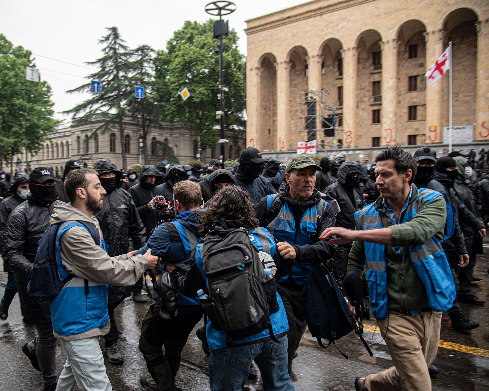
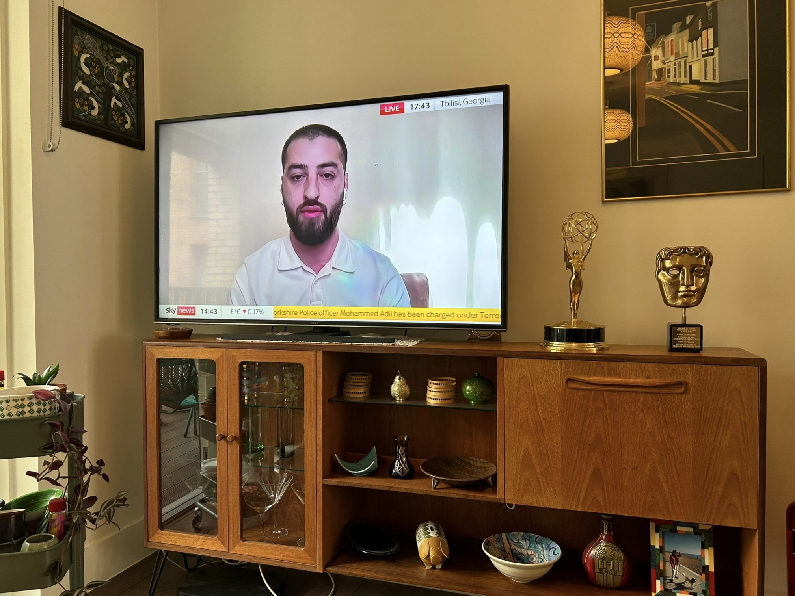
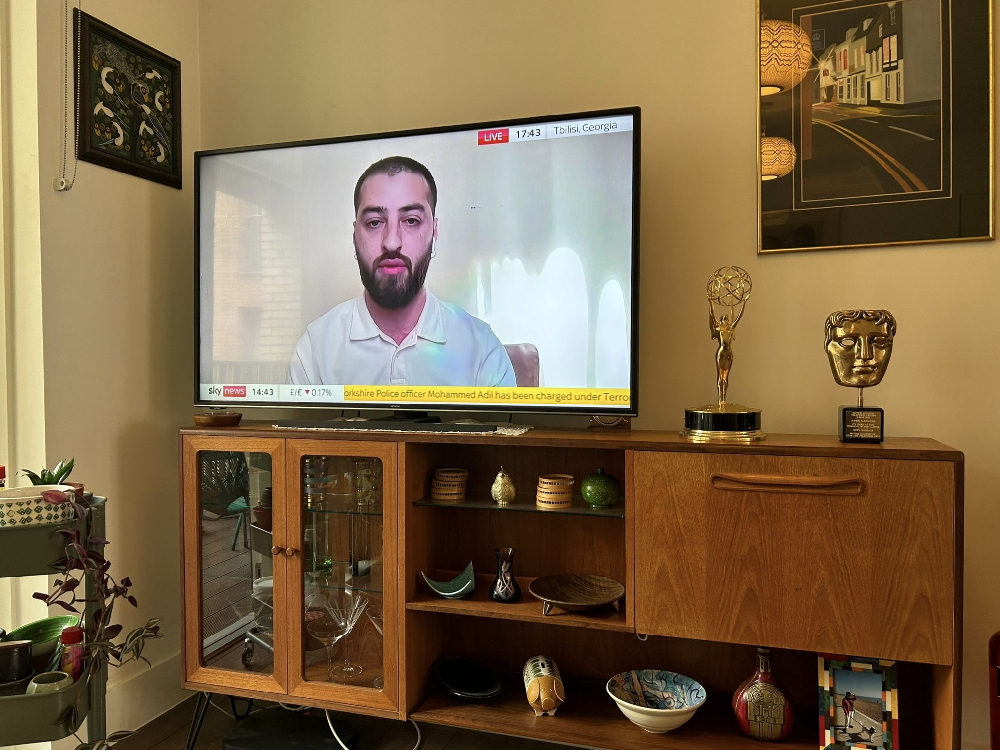
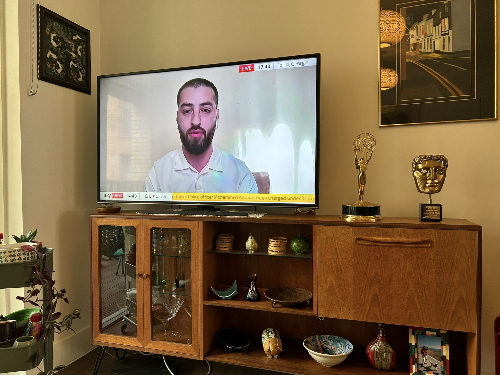

Journalist with 8+ years of experience focusing on politics, conflict, displacement, state repression, human rights and Russian influence across the Caucasus and post-Soviet space.
Worked with Sky news (UK), Radio Free Europe/Radio Liberty, Süddeutsche Zeitung, taz, Eurasianet.
Georgian, English, and Russian.
Articles
Videos
Collabs
Sky News
Dec 1, 2024
Georgians worry about ending up like Ukraine as government leans towards Russia
Johnny Harris
Sep 26, 2024
Why Georgia Fears Being Swallowed by Russia
Radio Free Europe/Radio Liberty
August 19, 2021
Prejudice and pride
About


Tornike Mandaria is a journalist based in Tbilisi, Georgia, reporting on politics, conflict, authoritarianism, human rights, and Russian influence across Georgia, the Caucasus, and the wider post-Soviet region. He works across formats including feature writing, live reporting, video production, and translation/field production.
He joined Radio Free Europe/Radio Liberty in 2019 as a Václav Havel Fellow and continued at the company for five years as a multimedia journalist. During that time, he frequently reported from the front lines of Georgia’s pro-democracy, anti-government, and anti-Russian protests—often under tear gas, pepper spray, and water cannon fire—documenting police brutality and state repression.
His 2023 video about Ukrainian schoolchildren forcibly taken to Russia from occupied Mykolaiv and their escape to Georgia was a finalist for the EU Prize for Journalism. His 2021 documentary on anti-LGBTQ+ riots in Tbilisi, during which he was physically attacked by a far-right mob, won Best Human Rights Video Report award.
Since 2022, Tornike has worked as a freelance local producer for Sky News (UK). He contributed to coverage of the Russian influx into Georgia after Putin’s mobilization order, providing real-time translation and reporting support. He also pitched and helped produce Sky’s early coverage of Georgia’s controversial “foreign agents law,” bringing international attention to the crackdown on pro-democracy protests. He later assisted in investigation into UK cars exported to Russia via Georgia despite sanctions, and the Georgian government’s violent dispersal of protestors after freezing EU integration talks.
As a contributor to German newspaper taz, Tornike has reported on Georgia’s democratic backsliding, its anti-Russian protest movement, and the government’s adoption of Kremlin-style anti-LGBTQ+ policies.
In 2024, Tornike got to work as a local producer for Emmy-winning journalist and YouTube creator Johnny Harris. This collaboration was greatly meaningful, as Johnny’s visual storytelling had been inspiring since his early days at Vox.
As part of his 2024 IJP Fellowship at Germany’s leading newspaper Süddeutsche Zeitung, he published a feature on Georgia’s queer diaspora in Berlin, highlighting the growing hostility and repression they face at home.
For Eurasianet, he has reported on Russian-occupied regions of Abkhazia and South Ossetia, including open-source coverage of a planned Russian naval base in Abkhazia and its implications for Georgia's Middle Corridor aspirations, and South Ossetians fighting Russia's war in Ukraine in the early days of invasion.
Tornike also participated in the U.S. State Department’s International Visitor Leadership Program (IVLP) in 2023, traveling across the country to explore American civil society, political diversity, and racial justice movements—from slavery’s legacy in Alabama to the George Floyd protests in Minneapolis.


 
